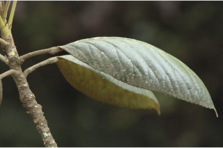
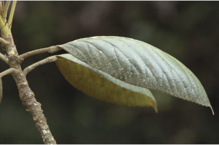
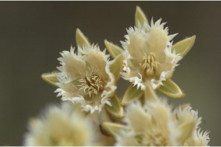
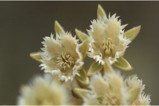

| Habit : | Trees up to 12 m tall. |
| Leaves : | Leaves simple , alternate , spiral , clustered at twig ends; petiole 2.5 cm; lamina 7.5-10 x 5-7.5 cm, elliptic , folded boat-shaped, apex acute to shortly acuminate , base acute , with very shallow serrations , margin revolute , coriaceous , densely tomentose beneath; midrib slightly raised above; secondary_nerves ca. 9 pairs, branched towards margin; tertiary_nerves reticulo-percurrent . |
| Inflorescence / Flower : | Inflorescence racemes , 5-10 cm long, ca. 10 flowered; pedicels 2 cm long, tomentose ; petals cream, laciniate ; anthers awned . |
| Fruit and Seed : | Drupe , ovoid , fleshy, green, 1.8 x 1 cm; seed 1, oblong , endocarp stony, tuberculate . |


 


 
